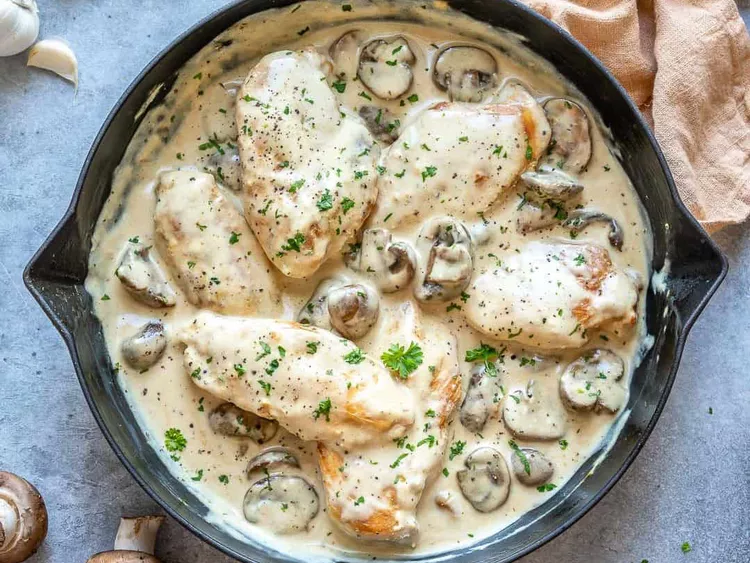

Home
Romantic Chicken with Artichokes and Mushrooms

Description
Easy, moist, flavorful and aromatic -- the white wine, artichokes and mushrooms make this chicken dish the to way to any man's heart! Delicious served with buttered noodles and fresh greens.
Ingredients
- 4 skinless, boneless chicken breast halves
- salt and pepper to taste
- 1 tablespoon olive oil
- 1 tablespoon butter
- 1 (14 ounce) can marinated quartered artichoke hearts, drained, liquid reserved
- 1 cup sliced fresh mushrooms
- 1 cup white wine
- 1 tablespoon capers